Truesilver items were introduced in R++. They are very light, but cannot be smithed, as there are no truesilver ingots.
| Wearable | Special Properties |
|---|---|
| Helmet | PV of equipped helmets reduces the damage taken from stone block traps. |
| Necklace | Amulets have their material (made of) tied to their unidentified appearance. |
| Body Armor | Body armor can be generated with prefixes and suffixes; it is worn underneath girdles, which means that a cursed girdle prevents equipping or unequipping body armor. |
| Girdle | Girdles are worn over body armor, which means that a cursed girdle prevents equipping or unequipping body armor. |
| Cloak | Cloaks protect the rest of equipped items from rain. They generally get easily destroyed. |
| Shield | Throwing shields as missile weapons increases the weapon marks for the shields skill. Likewise, higher shield skill gives bonuses when throwing shields. Shields cannot be used to attack enemies in melee. |
| Ring | Rings are worn under gauntlets, which means that cursed gauntlets prevent equipping or unequipping rings. As amulets, rings have their material (made of) tied to their unidentified appearance. |
| Bracers | Bracers feature special ASCII character: ~ |
| Gauntlets | Gauntlets are worn over rings, which means they must be removed in order to equip or unequip rings. Wielding cursed items other than shields also prevents equipping and unequipping gauntlets. Making an unarmed attack against a monster that has acidic skin may corrode or destroy equipped gauntlets that are susceptible to acid damage. This does not occur if the PC has acid resistance. |
| Boots | Kicking a monster that has acidic skin may corrode or destroy equipped boots that are susceptible to acid damage. This does not occur if the PC has acid resistance. Hurthlings suffer a -2 penalty to Dexterity while they have any type of boots equipped. |
| Name | UnID'd name | Weight | [DV,PV] | Special | Made of | Damage | Tile |
|---|---|---|---|---|---|---|---|
| hood | 3s | [+0,+0] | cloth | HM(+0,1d1) | |||
| hat | 4s | [+0,+0] | cloth | HM(+0,1d1) |
| ||
| leather cap | 5s | [+0,+0] | leather | HM(+0,1d1) |
| ||
| bone helmet | 40s | [+0,+1] | wood | HM(+0,1d3) | |||
| silver helmet | 50s | [+0,+0] | iron | H(+0,1d4) M(+0,1d3) |
| ||
| horned helmet | 100s | [+1,+1] | iron | H(+0,1d4) M(+0,1d3) | |||
| orcish helmet | black helmet | 100s | [+1,+2] | {Pe-2} | iron | H(+0,1d4) M(+0,1d3) |
|
| metal cap | 50s | [+0,+1] | iron | HM(+0,1d3) |
| ||
| mithril cap | metal cap | 40s | [+0,+2] | mithril | HM(+0,1d3) |
| |
| adamantium cap | metal cap | 36s | [+0,+2] | adamantium | HM(+0,1d3) | ||
| eternium cap | metal cap | 28s | [+0,+4] | eternium | HM(+0,1d3) |
| |
| truesilver cap | metal cap | 10s | [+0,+2] | truesilver | HM(+0,1d3) | ||
| diadem of beauty | silver diadem | 35s | [+0,+0] | {Ap+4} | iron | HM(+0,1d3) | |
| helm of beauty | silver helmet | 50s | [+0,+0] | {Ap+1} | iron | H(+0,1d4) M(+0,1d3) | |
| helm of leadership | silver helmet | 100s | [+1,+2] | {Ch+6} | iron | H(+0,1d4) M(+0,1d3) |
|
| helm of mental stability | crystal helmet | 100s | [+0,+1] | {Le+1} -Conf | stone | H(+0,1d4) M(+0,1d3) | |
| helm of teleportation | metal helmet | 50s | [+0,+1] | +Tele | iron | HM(+0,1d3) |
|
| helm of water breathing | blue metal cap | 30s | [+0,+1] | +WBre *RusP | iron | HM(+0,1d3) | 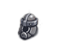 |
| iron crown | 65s | [+0,+1] | iron | HM(+0,1d3) | |||
| crown of fire | red crown | 65s | [+1,+2] | =Fire | iron | HM(+0,1d3) | |
| crown of ice | blue crown | 65s | [+1,+2] | =Cold | iron | HM(+0,1d3) |
|
| crown of lightning | yellow crown | 65s | [+0,+1] | (+5 Sp) =Elec | iron | HM(+0,1d3) |
|
| crown of regeneration | brass crown | 55s | [+0,+0] | *Rgen | iron | HM(+0,1d3) |
|
| Name | UnID'd name | Weight | (MEM,MIM) [DV,PV] | Special | Damage | Tile |
|---|---|---|---|---|---|---|
| +Crown of Chaos | obsidian crown | 500s | (-6,-6) [+0,+15] | {Ma+10} (+10 Sp) +Curs +Doom -Deth -Petr *EoCC ~CTri | HM(-6,1d3) | 
|
| +crown of science | steel crown | 65s | [+4,+8] | {Le+9} +Curs +Doom =Fire *Curs | HM(+0,1d3) | 
|
| *crown of leadership | silver crown | 65s | [+2,+7] | {Ch+18} +SeeI -Conf -Pois | HM(+0,1d3) | |
| *Iron Crown of Havlor | iron crown | 65s | (-6,-6) [+12,+12] | {Le+4} | HM(-6,1d3) | |
| *circlet of the pure mind | circlet | 18s | [+2,+2] | {Wi+8} -Conf -Deth *PPRg ~Mind | HM(+0,1d3) | |
| *Helm of the Night Watchman | dirty helmet | 100s | [+0,+8] | {Pe+4} -Conf -Slee -Stun ~Ligt | H(+0,1d4) M(+0,1d3) | 
|
| *glowing gem "Third Eye" | gem-studded helmet | 5s | [+4,+0] | {Pe+8} +SeeI ~Maps | HM(+0,1d1) | 
|
| *crowned spiked helmet of chaos lordship | spiked helmet | 90s | (+3,+0) [+2,+12] | {St+6} +SeeI +WBre -Conf -Slee *Terr | H(+3,1d6) M(+0,1d6) |
| Amulet of ... | UnID'd name | Weight | Effect | Made of | Tile |
|---|---|---|---|---|---|
| brass amulet | 3s | no effect; can be polymorphed | gold | ||
| balance | gray | 3s | reduces effect chaotic or lawful acts have on alignment | iron | |
| chaos | obsidian [7] | 3s | draws alignment towards C-; damages lawfuls 1d3 | adamantium | |
| cold heart | bleak | 3s | -Cold; -12 Ch (+/-3) [8] | iron | 
|
| death ray resistance | stone | 7s | -Deth | stone | 
|
| defense | iron | 3s | +2 DV (+/-3) [8] | iron | |
| free action | golden | 3s | -Para | iron | 
|
| greed | platinum | 3s | detects gold [1] | iron | 
|
| health | leather | 3s | -Sick; disables last sickness attack if not cursed | various | |
| hunger | tarnished | 3s | *Curs; increases base food consumption rate: x2/x3/x4 B/U/C | iron | |
| life saving | steel | 3s | resurrects PC [2]; saves Khelavaster – see 3.7.1 | iron | |
| light | glass [7] | 3s | light source; disables Stealth | glass | |
| luck | lead | 8s | +Luck *IncL | iron | |
| order | marble [7] | 3s | draws alignment towards L+; damages chaotics 1d3 | adamantium | 
|
| perseverance | electrum | 3s | +3 Wi (+/-3) [8] | iron | |
| petrification resistance | opal | 3s | -Petr | stone | 
|
| protection | silver [7] | 3s | +2 PV (+/-3) [8] | mithril | |
| protection from constructs | onyx | 3s | protects vs special attacks of constructs [6] | stone | 
|
| protection from undead | bone [7] | 3s | protects vs special attacks of undead [6] [3] | wood | 
|
| speed | bronze | 3s | (+3 Sp) [8] | iron | |
| teleport control | copper | 3s | +TCtr | iron | |
| water breathing | blue | 3s | +WBre *RusP | iron | 
|
| necklace of rabies resistance | pearl necklace | 2s | makes rabid dogs edible; B/U/C status improves satiation from rabid dogs | various | 
|
| necklace of rapid healing | coral necklace | 2s | increases HP regeneration rate [4] | various | 
|
| necklace of the eye | splendid necklace | 3s | increases vision range, +3 or +4/+2/-1 or -2 for B/U/C [5] | iron | |
| necklace of the silver tongue {Ch+3} | shining necklace | 2s | +3 Ch (+/-3) [8] | various | 
|
| pendant of beauty | ruby | 3s | +4 Ap (+/-3) [8] | stone | |
| pendant of mana | amber | 3s | +2 Ma (+/-3) [8] | iron | 
|
[1] If there is gold lying on the ground on the level on which the PC is currently located, it will occasionally generate a message "You sense the presence of gold", or "You feel the urge to get rich really fast." if there is a Royal Vault on the level.
[2] Cursed: 1/4 HP and -1d3+1 To, uncursed: 1/2 HP, blessed: full HP; amulet of life saving does not save your life if you get killed by – collapsing dungeon (kicking stairs, you die with the amulet around your neck), old age (it tries to save you but says your time has come and fails); corruption (though it's not really a death, instead you are transformed into a little purple j); wearing insufficient equipment when entering the Chaos Gate (AoLS disappears when you enter it); sacrificing yourself (god destroys your amulet if you try to cheat him/her and then you are sacrificed – under certain circumstances your god forgives you and will let you continue but without your amulet); getting sacrificed by a monster (you die with the amulet around your neck).
[3] Banshee wail just causes 20d15 damage instead of instant death if this amulet is worn.
[4] Uncursed halves the time required to receive one point of HP healed due to natural regeneration; blessed reduces that time divided by eight; cursed does nothing.
[5] In the wilderness, the effect is about +10/+5/-5 B/U/C. Blessed necklace also grants some sort of "vision" to blind players – it allows the map to be drawn only one tile around character; monsters are not visible.
[6] 60% / 80% / 120% chance of such attacks B/U/C.
[7] Always this UnID'd name.
[8] Auto-identifies on equip.
The amulets with a numerical modifier above are base value. There are others available. The numerical modifier can be {base value} +/- 3. Amulets of speed, however, are always (+3 Sp). Extensive testing was done by wishing for amulets of the cold heart, amulets of defense, and amulets of order. For the statisticians among the readers, the results are shown here.
| Name | UnID'd name | Weight | [DV,PV] | Special | Damage | Tile |
|---|---|---|---|---|---|---|
| +amulet of raw steel | steel amulet | 10s | [+3,+3] | {Pe+12} +SeeI -Deth -Slee -Stun *EoCC | HM(-4,1d3) | 
|
| +ankh | ankh | 3s | [+2,+2] | +Luck +Fate *IncL | HM(-4,1d3) | 
|
| *Aylas Holy Scarf | silk scarf | 5s | [+10,+10] | {Ch+6} =Sick *Pure ~Bles | HM(+0,1d2) | 
|
| +Black Torc | black torc | 3s | [+4,+2] | (+10 Sp) +Curs -Cold -Elec -Fire !Unde *Curs *Retn | H(+0,1d10+2) M(+2,2d6+2) | |
| +Medal of Chaos | obsidian amulet | 300s | [+12,+3] | {Ap+12} +Curs +Doom +SeeI +WBre -Petr -Stun *Curs *EoCC ~CTri | HM(-4,1d3) | 
|
| *sapphire amulet "Preserver" | sapphire amulet | 3s | [+4,+4] | {Wi+7} +Luck -Para -Pois *Rgen | HM(-4,1d3) | 
|
| +heart of Ancardia | ruby necklace | 3s | {Dx+7} +Luck +Fate -Pois =Fire | HM(-4,1d3) | 
| |
| *amulet of indomitable life | gilded amulet | 2s | [+4,+4] | {To+10} -Deth -Pois =Sick *Rgen | HM(-4,1d2) | |
| *stone of the ages | rock necklace | 2s | [+3,+6] | {Le+6} -Deth -Para -Petr ~Ages | HM(-4,1d2) | |
| +amulet of resurrection | beautiful amulet | 3s | [1] | HM(-4,1d3) |
[1] The amulet of resurrection is only obtainable if Lawenilothehl is first entered on August 30th, the day when ADOM resurrection campaign ended. If the date requirement is met, a blessed amulet of resurrection is generated at the top left corner of Barnabas' shop, where it can be bought for 90169gp. The price is fixed, and unlike all other items in the game is not affected by the race of PC or shopkeeper. The amulet can be sold for a fixed price of 90168gp, assuming the shopkeeper has enough money to pay. Like an amulet of life saving, it resurrects PC if her HP gets below 0, always to full HP, regardless of status. In addition, if the date is August 30th, all attributes are raised by +3/+2/+1 B/U/C. The amulet can be used to save Khelavaster. If done so, he will give the PC some of the energy he gained from the amulet (+2 to all attributes and +40 max PP/+1 to attributes and +30 max PP/+20 max PP B/U/C) in addition to the normal rewards.
| Name | UnID'd name | Weight | (MEM,MIM) [DV,PV] | Special | Made of | Damage | Tile |
|---|---|---|---|---|---|---|---|
| clothes | 40s | [+0,+0] | cloth | HM(+0,1d1) | |||
| fancy clothes | 30s | [+1,+0] | {Ap+1} | cloth | HM(+0,1d1) | ||
| ugly clothes | 50s | [+0,+0] | {Ap-1} | cloth | HM(+0,1d1) | 
| |
| robe | 60s | [+0,+1] | cloth | HM(+0,1d1) | 
| ||
| black robe | 50s | [+0,+1] | cloth | HM(+0,1d1) | 
| ||
| blood-stained robe | 60s | [+0,+1] | {Ap-2} | cloth | HM(+0,1d1) | 
| |
| clean robe | 60s | [+0,+1] | {Ap+2} | cloth | HM(+0,1d1) | 
| |
| robe of the eyes | 60s | [+0,+1] | *Sear [3] | cloth | HM(+0,1d1) | 
| |
| healer's robe | 60s | [+0,+1] | -Sick [3] | cloth | HM(+0,1d1) | ||
| robe of purity | 60s | [+0,+1] | *Pure [3] | cloth | HM(+0,1d1) | 
| |
| robe of invisibility | robe | 60s | [+0,+1] | +Invi | cloth | HM(+0,1d1) | |
| mummy wrapping | strange wrapping | 50s | [-2,+0] | {Ap-6} [2] | cloth | HM(+0,1d1) | 
|
| leather apron | 75s | (-1,-1) [+0,+2] | leather | HM(-1, 1d2) | 
| ||
| light furs | 180s | [+0,+1] | leather | HM(+0,1d1) | 
| ||
| thick furs | 300s | (-1,-1) [+0,+2] | leather | HM(-1,1d2) | 
| ||
| leather armor | 150s | [+0,+2] | leather | HM(+0,1d2) | |||
| studded leather armor | 250s | (-1,+0) [-1,+3] | various | H(-1,1d4) M(+0,1d4) | 
| ||
| shell armor | 300s | (+0,-2) [-1,+2] | various | H(+0,1d5) M(-2,1d5) | 
| ||
| spider shell armor | shell armor | 300s | (+0,-2) [-1,+5] | various | H(+0,1d5) M(-2,1d5) | ||
| elven chain mail | 10s | [+0,+5] | mithril | HM(+0,1d6) | |||
| ring mail | 300s | (-1,-1) [-1,+3] | iron | HM(-1,1d4) | 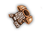 | ||
| mithril ring mail | ring mail | 240s | (-1,-1) [-1,+5] | mithril | HM(-1,1d4) | ||
| adamantium ring mail | ring mail | 216s | (-1,-2) [+0,+7] | adamantium | H(-1,1d4) M(-2, 1d4) | ||
| eternium ring mail | ring mail | 196s | (-1,-1) [+0,+9] | eternium | HM(-1,2d4) | ||
| truesilver ring mail | ring mail | 60s | [+0,+5] | truesilver | HM(+0,1d4) | ||
| scale mail | 400s | (-1,-2) [-2,+4] | iron | H(-1,1d5) M(-2,1d5) | |||
| mithril scale mail | scale mail | 320s | (-1,-2) [-1,+6] | mithril | H(-1,1d5) M(-2,1d5) | 
| |
| adamantium scale mail | scale mail | 288s | (-1,-2) [+0,+8] | adamantium | H(-1,1d5) M(-2,1d5) | ||
| eternium scale mail | scale mail | 220s | (-1,-1) [+0,+10] | eternium | HM(-1,2d4) | ||
| truesilver scale mail | scale mail | 80s | [+0,+6] | truesilver | HM(+0,1d5) | ||
| crystal scale mail | scale mail | 620s | (-1,-2) [+0,+8] | crystal | H(-1,1d5) M(-2,1d5) | 
| |
| chain mail | 400s | (-1,-3) [-3,+5] | iron | H(-1,1d5) M(-3,1d5) | 
| ||
| mithril chain mail | chain mail | 320s | (-1,-3) [-2,+7] | mithril | H(-1,1d5) M(-3,1d5) | ||
| adamantium chain mail | chain mail | 288s | (-1,-3) [-1,+9] | adamantium | H(-1,1d5) M(-3,1d5) | 
| |
| eternium chain mail | chain mail | 220s | (-1,-2) [-1,+11] | eternium | H(-1,2d4) M(-2,1d6+1) | 
| |
| truesilver chain mail | chain mail | 80s | [+0,+7] | truesilver | H(+0,1d5) | ||
| crystal chain mail | chain mail | 620s | (-1,-3) [-1,+9] | crystal | H(-1,1d5) M(-3,1d5) | 
| |
| splint mail | 450s | (-2,-4) [-2,+6] | iron | H(-2,3d2) M(-4,1d6+2) | 
| ||
| mithril splint mail | splint mail | 360s | (-2,-4) [-2,+7] | mithril | H(-2,1d6+2) M(-4,1d6+2) | 
| |
| adamantium splint mail | splint mail | 278s | (-2,-4) [-2,+9] | adamantium | H(-2,1d6+2) M(-4,1d6+2) | 
| |
| eternium splint mail | splint mail | 200s | (-1,-2) [-1,+11] | eternium | H(-1,1d8+4) M(-2,1d8+4) | ||
| truesilver splint mail | splint mail | 90s | [+0,+7] | truesilver | HM(+0,1d6+2) | 
| |
| plate mail | 500s | (-2,-4) [-4,+7] | iron | H(-2,3d2) M(-4,1d6+2) | 
| ||
| mithril plate mail | plate mail | 400s | (-2,-4) [-3,+9] | mithril | H(-2,1d6+2) M(-4,1d6+2) | ||
| adamantium plate mail | plate mail | 320s | (-2,-4) [-2,+11] | adamantium | H(-2,1d6+2) M(-4,1d6+2) | ||
| eternium plate mail | plate mail | 240s | (-1,-2) [-1,+13] | eternium | H(-1,1d8+4) M(-2,1d8+4) | 
| |
| truesilver plate mail | plate mail | 100s | [+0,+9] | truesilver | HM(+0,1d6+2) | ||
| crystal plate mail | plate mail | 720s | (-2,-4) [-2,+11] | crystal | H(-2,1d6+2) M(-4,1d6+2) | 
| |
| black dragon scale mail | 200s | (-2,-4) [-2,+11] | =Acid | adamantium | H(-2,1d6+2) M(-4,1d6+2) | 
| |
| blue dragon scale mail | 200s | (-1,-4) [-1,+10] | =Elec | adamantium | H(-1,1d6+1) M(-4,1d6+2) | 
| |
| red dragon scale mail | 220s | (-1,-4) [-1,+13] | =Fire | adamantium | H(-1,1d6+1) M(-4,1d6+2) | 
| |
| white dragon scale mail | 200s | (-2,-4) [-2,+11] | =Cold | adamantium | H(-2,1d6+2) M(-4,1d6+2) | 
| |
| moloch armor | hulking armor | 15000s | (-8,-16) [-30,+50] | {Dx-20} (-20 Sp) =Fire [1] | eternium | H(-8,3d10) M(-16,3d10+2) | |
| full plate armor | 800s | (-4,-8) [-6,+9] | iron | H(-4,1d8+2) M(-8,1d8+2) | |||
| mithril full plate armor | full plate armor | 640s | (-3,-7) [-5,+11] | mithril | H(-3,1d8+2) M(-7,1d8+2) | 
| |
| adamantium full plate armor | full plate armor | 516s | (-2,-6) [-4,+13] | adamantium | H(-2,1d8+2) M(-6,1d8+2) | 
| |
| eternium full plate armor | full plate armor | 387s | (-1,-5) [-3,+15] | eternium | H(-1,1d8+2) M(-5,1d8+2) | ||
| truesilver full plate armor | full plate armor | 160s | [+0,+11] | truesilver | HM(+0,1d8+2) | 
|
[1] Wishing for "moloch armors" or "hulking armors" yields eternium plate mails.
[2] Grants visibility.
[3] Added in R++.
| Name | UnID'd name | Weight | (MEM,MIM) [DV,PV] | Special | Damage | Tile |
|---|---|---|---|---|---|---|
| +ancient mummy wrapping | strange wrapping | 60s | [+1,+5] | {Ap-8} +SeeI -Deth -Pois -Slee -Stun =Cold | HM(+0,1d1) | 
|
| *robes of resistance | robes of resistance | 60s | (-4,-4) [+3,+12] | {To+5} -Acid -Elec -Fire | HM(-4,1d1) | |
| *fine leather armor "Nature's Companion" | leather armor | 120s | (+2,+0) [+2,+8] | (+15 Sp) =Elec =Fire | H(+2,1d2) M(+0,1d2) | |
| *Shirt of the Saints | clothes | 20s | [+8,+4] | {Le+2} +SeeI -Conf -Slee *Sear | HM(+0,1d1) | 
|
| *Perion's mithril plate mail | plate mail | 450s | (+4,+4) [-1,+19] | {Ch+9} -Acid -Fire =Sick [1] | H(+4,3d2) M(+4,1d6+2) | 
|
| +chain mail of raw steel | steel chain mail | 600s | (-1,-3) [+4,+16] | {To+6} -Acid -Cold -Deth -Para =Fire *EoCC *Rgen | HM(-1,2d4) M(-3,2d4) | |
| *chain mail of the martyred crusader | chain mail | 337s | (-1,-3) [-1,+10] | {Wi+12} +Luck +Fate +WBre -Conf -Deth -Pois =Elec =Sick *PPRg *Pure | H(-1,1d5) M(-3,1d5) | 
|
| *robe of the master monk | robe | 30s | (+6,+0) [+8,+4] | {Wi+10} (+10 Sp) +SeeI +WBre -Cold -Conf -Elec -Fire -Para -Pois -Slee =Sick | H(+6,1d1) M(+0,1d1) | 
|
| *karmic dragon scale mail "Wyrm's Behest" | scale mail | 220s | (-1,-4) [-1,+12] | +Luck =Acid =Cold =Elec =Fire | H(-1,1d6+1) M(-4,1d6+2) | 
|
| *spiked armor of chaos and terror | spiked full plate armor | 1500s | (-6,-12) [-6,+35] | {St+8} -Acid -Cold =Fire *Terr | H(-6,1d10) M(-12,1d10) |
[1] stats in 1.1.1 and earlier: (-1,-4) [-1,+13] -Acid -Fire
| Armor prefix | Effect | Great identify message |
|---|---|---|
| antimagical | PP regeneration stops | It completely prevents the recovery of magical energy. |
| auto-locking | *Curs | It automatically locks itself to your body when worn. |
| beautiful | +4 Ap | This beautifully fashioned armor improves your looks quite a bit (+4 to Appearance, already figured in). |
| charged | 2d6 shock damage every 20 turns | This armor seems to charge up from time to time and then releases its deadly charge into your body. |
| empowered | *PPRg | It accelerates the recovery of magical energy. |
| extra-heavy | 4x normal weight | It weighs four times as much as other armors of its type (already figured in). |
| gorgeous | +8 Ap | This gorgeously crafted piece of armor immensely improves your appearance (+8 to Appearance, already figured in). |
| green | -Acid | It grants resistance to acid. |
| heavy | 2x normal weight | It weighs twice as much as other armors of its type (already figured in). |
| light | half normal weight | It weighs only half as much as other armors of its type (already figured in). |
| padded | -Stun | It grants resistance to stunning. |
| red | -Fire | It grants resistance to fire. |
| rotting | slows HP regeneration | This rotting apparel slows your physical recovery. |
| shining | +1 Ap | This armor is so polished that it shines very nicely (+1 to Appearance, already figured in). |
| soft | easily damaged | This armor is easily damaged. |
| trapped | removable only via destruction or transformation with a blessed potion of exchange | Once worn this armor becomes so welded to your body that it can't be removed without destroying it. |
| ultra-heavy | 8x normal weight | It weighs eight times as much as other armors of its type (already figured in). |
| vigilant | +4 Pe | It is covered with eyes that increase your perceptiveness (+4 to Perception, already figured in). |
| vile | reduces Ap and Ch to 1 | Its appearance is extremely vile and completely ruins your apparition (Charisma and Appearance both reduced to 1, already figured in). |
| white | -Cold | It grants resistance to cold. |
| worm-ridden | checks every 100 turns if 1d30 > To then sick for 10d10 turns | It is ridden with all kinds of insects greatly increasing your chance to get ill. |
| yellow | -Elec | It grants resistance to shock attacks. |
| Armor suffix | Effect | Great identify message |
|---|---|---|
| of anger | automatically switches tactics to aggressive | It forces you to fight with offensive tactics. |
| of balance | moves alignment towards neutrality; damages non-neutral PCs | It tries to convert you to the forces of Balance. |
| of carrying | +50% to carrying capacity | It allows you to carry 50% more than usual (already figured in). |
| of chaos | moves alignment moves towards chaotic; same effect as amulet of chaos | It tries to convert you to the forces of Chaos. |
| of damnation | +Doom | Wearing it makes you doomed. |
| of defense | +4 DV | It is finely crafted to deflect blows (+4 to DV, already figured in). |
| of hate | similar to the unholy aura corruption, causes all NPCs to become hostile | It causes others to hate you. |
| of health | -Sick | It helps recovering from diseases. |
| of hunger | decreases satiation from food | It increases the amount of food you need to digest. |
| of leadership | +6 Ch | It confers special leadership powers upon you (+6 to Charisma, already figured in). |
| of life | +20% HP | It increases your inherent spark of life (+20% hit points, already figured in). |
| of order | moves alignment moves towards lawful; same effect as amulet of order | It tries to convert you to the forces of Order. |
| of power | +20% PP | It increases your magical powers (+20% power points, already figured in). |
| of protection | +4 PV | It is sturdily built to absorb blows (+4 to PV, already figured in). |
| of rage | does not affect true berserking | Even true berserkers can wear it due to the raging spirit that inhibits it. |
| of resilience | +4 To | It makes you more resilient to damage (+4 to Toughness, already figured in). |
| of sloth | -20 Sp | It slows you down immensely (-20 to speed, already figured in). |
| of speed | +5 Sp | It increases your reflexes (+5 to speed, already figured in). |
| of the sea | lessens drowning damage – 100%/80%/60% of the time (B/U/C) | It protects you from drowning. |
| of travelling | halves food consumption in wilderness | It halves your food consumption while travelling through the wilderness. |
| Name | UnID'd name | Weight | [DV,PV] | Special | Made of | Damage | Tile |
|---|---|---|---|---|---|---|---|
| leather girdle | 5s | [+0,+0] | leather | HM(+0,1d2) | |||
| metal girdle | 25s | [+0,+1] | iron | HM(+0,1d4) | 
| ||
| mithril girdle | metal girdle | 20s | [+0,+2] | mithril | HM(+0,1d4) | 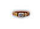 | |
| adamantium girdle | metal girdle | 18s | [+0,+3] | adamantium | HM(+0,1d4) | 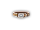 | |
| eternium girdle | metal girdle | 12s | [+0,+4] | eternium | HM(+0,1d4) | 
| |
| truesilver girdle | metal girdle | 5s | [+0,+2] | truesilver | HM(+0,1d4) | 
| |
| girdle of weight | (strange metal girdle) | 40s | [+0,+0] | weighs 200s/400s/600s B/U/C when equipped | various | HM(+0,1d4) | 
|
| girdle of greed | (copper-hewn girdle) | 7s | [+0,+0] | adds capacity [1] | various | HM(+0,1d2) | |
| girdle of carrying | (thick girdle) | 15s | [+0,+0] | adds capacity [2] | leather | HM(+0,1d2) | 
|
| girdle of strength | (hard girdle) | 15s | [+0,+0] | {St+1} | leather | HM(+0,1d2) | |
| girdle of giant strength | (bulky girdle) | 30s | [+0,+0] | {St+12} | various | HM(+0,1d4) | 
|
| money belt | (leather girdle) | 5s | [+0,+0] | prevents pickpocketing | leather | HM(+0,1d2) |
[1] A girdle of greed adds carrying capacity in proportion to the amount of gold you carry: Cursed – carrying capacity is reduced by weight of gold * 400%. Uncursed – carrying capacity is increased by weight of gold * 50%. Blessed – carrying capacity is increased by weight of gold * 100%.
[2] Cursed – carrying capacity is reduced by 50%. Uncursed – carrying capacity is increased by St * 50. Blessed – carrying capacity is increased by St * 100.
| Name | UnID'd name | Weight | (MEM,MIM) [DV,PV] | Special | Damage | Tile |
|---|---|---|---|---|---|---|
| +platinum girdle "True Strength" | platinum girdle | 20s | (+3,+0) [+18,+9] | {Wi+15} (+15 Sp) +Luck +Fate -Conf -Deth -Pois *IncL *Rgen | H(+3,1d2+3) M(+0,1d2) | 
|
| *girdle of the emperors "Celestrix" [1] | golden girdle | 25s | [+13,+13] | {Ch+8} +Doom +SeeI -Deth -Pois -Slee =Elec *Rgen | HM(+0,1d4) | 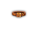 |
| *potion belt | belt | 25s | [+0,+1] | ~Pots | HM(+0,1d4) | 
|
[1] Unavailable in 1.1.1 without patching.
| Name | UnID'd name | Weight | (MEM,MIM) [DV,PV] | Special | Made of | Damage | Tile |
|---|---|---|---|---|---|---|---|
| hooded cloak | 40s | [+1,+0] | cloth | HM(+0,1d1) | 
| ||
| leather cloak | 40s | (-1,+0) [+1,+0] | leather | H(-1,1d1) M(+0,1d1) | 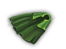 | ||
| light cloak | 20s | [+1,+0] | cloth | HM(+0,1d1) | 
| ||
| cloak of adornment | (multi-colored cloak) | 40s | [+0,+0] | {Ap+4} | cloth | HM(+0,1d1) | 
|
| cloak of defense | (warm cloak) | 20s | [+3,+0] | cloth | HM(+0,1d1) | 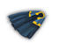 | |
| cloak of invisibility | fine cloak | 30s | (-1,+0) [+1,+0] | +Invi | leather | H(-1,1d1) M(+0,1d1) | 
|
| cloak of protection | (cheap cloak) | 20s | [+0,+3] | cloth | HM(+0,1d1) | 
|
| Name | UnID'd name | Weight | (MEM,MIM) [DV,PV] | Special | Damage | Tile |
|---|---|---|---|---|---|---|
| *cloak of Oman | dirty cloak | 20s | (+2,+0) [+4,+4] | {Dx+8} +Tele | H(+2,1d1) M(+0,1d1) | 
|
| *Brannalbin's Cloak of Defense | gray cloak | 30s | [+3,+3] | +Invi -Acid -Cold -Elec -Fire | HM(+0,1d1) | 
|
| *tattered cloak of the dark souls | tattered cloak | 23s | [+6,+3] | {Wi-3} +Invi -Slee *Curs ~Shad | HM(+0,1d1) | 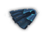 |
| *glowing green cloak "Venom Mantle" | light cloak | 40s | (+2,+0) [+4,+4] | -Pois =Acid ~Acid | HM(+0,1d1) | 
|
| Name | UnID'd name | Weight | (MEM) [DV,PV] | Made of | Damage | Tile |
|---|---|---|---|---|---|---|
| wooden shield | 80s | [+3,+1] | wood | HM(+0,1d6) | 
| |
| small shield | 50s | [+2,+0] | iron | H(+0,1d6) M(+0,1d4) | 
| |
| small mithril shield | small shield | 40s | [+3,+1] | mithril | H(+0,1d6) M(+0,1d4) | 
|
| small adamantium shield | small shield | 36s | [+5,+0] | adamantium | H(+0,1d6) M(+0,1d4) | 
|
| small eternium shield | small shield | 24s | [+7,+1] | eternium | H(+0,2d4+1) M(+0,1d4) | 
|
| small truesilver shield | small shield | 10s | [+3,+1] | truesilver | H(+0,1d6) M(+0,1d4) | |
| small crystal shield | small shield | 72s | [+5,+0] | crystal | H(+0,1d6) M(+0,1d4) | 
|
| medium shield | 100s | [+3,+1] | iron | HM(+0,1d6) | ||
| medium mithril shield | medium shield | 80s | [+5,+1] | mithril | HM(+0,1d6) | 
|
| medium adamantium shield | medium shield | 72s | [+7,+2] | adamantium | HM(+0,1d6) | 
|
| medium eternium shield | medium shield | 46s | [+9,+3] | eternium | H(+0,1d12+3) M(+0,1d6) | 
|
| medium truesilver shield | medium shield | 20s | [+5,+1] | truesilver | HM(+0,1d6) | 
|
| medium crystal shield | medium shield | 160s | [+9,+4] | crystal | HM(+0,1d6) | |
| large shield | 120s | (-1) [+5,+1] | iron | H(-1,1d8) M(+0,1d8) | 
| |
| large mithril shield | large shield | 96s | (-1) [+7,+2] | mithril | H(-1,1d8) M(+0,1d8) | |
| large adamantium shield | large shield | 86s | (-1) [+9,+3] | adamantium | H(-1,1d8) M(+0,1d8) | |
| large eternium shield | large shield | 54s | (-1) [+11,+5] | eternium | H(-1,2d8) M(+0,1d8) | |
| large truesilver shield | large shield | 24s | [+7,+2] | truesilver | HM(+0,1d8) | |
| large crystal shield | large shield | 210s | (-1) [+10,+2] | crystal | H(-1,1d8) M(+0,1d8) | 
|
| tower shield | 150s | (-2) [+7,+0] | iron | H(-2,1d5+2) M(+0,1d8+1) | 
| |
| tower mithril shield | tower shield | 120s | (-2) [+9,+2] | mithril | H(-2,1d5+2) M(+0,1d8+1) | 
|
| tower adamantium shield | tower shield | 108 | (-2) [+11,+2] | adamantium | H(-2,1d5+2) M(+0,1d8+1) | |
| tower eternium shield | tower shield | 70s | (-1) [+13,+4] | eternium | H(-1,2d10) M(+0,1d8+1) | |
| tower truesilver shield | tower shield | 30s | [+9,+2] | truesilver | H(+0,1d5+2) M(+0,1d8+1) | |
| tower crystal shield | tower shield | 260s | (-2) [+13,+4] | crystal | H(-2,1d5+2) M(+0,1d8+1) | 
|
| Name | UnID'd name | Weight | (MEM) [DV,PV] | Special | Damage | Tile |
|---|---|---|---|---|---|---|
| +dwarven shield "Rolf's Savior" | dwarven shield | 120s | (+2) [+9,+6] | -Cold -Fire -Pois ~Rolf | H(+2,1d6) M(+0,1d6) | |
| +shield of raw steel | steel shield | 180s | (+2) [+18,+12] | {To+8} -Pois =Cold =Fire *EoCC | H(+2,1d6) M(+0,1d6) | |
| *medium obsidian shield "Protector" | medium shield | 46s | [+20,+4] | {To+2} -Conf -Slee -Stun | H(+0,1d12+3) M(+0,1d6) | 
|
| *small black shield "Lust for Glory" [1] | small shield | 50s | (+1) [+5,+5] | {Wi+3} -Deth -Para -Petr | H(+1,1d6) M(+0,1d4) | 
|
| *intricate wooden shield "Nature's Friend" | wooden shield | 80s | [+6,+3] | -Acid -Cold -Elec -Fire -Pois | HM(+0,1d6) | 
|
| +gleaming dwarven shield | ancient dwarven shield | 12s | (+4) [+15,+10] | -Cold -Fire -Pois | H(+4,2d6) M(+0,2d6) | |
| *mighty tower shield "The Wall" | tower shield | 750s | (-2) [+20,+10] | {To+5} -Stun | H(-2,1d5+2) M(+0,1d8+1) |
[1] Unavailable in ADOM 1.1.1 without patching.
| Ring of ... | UnID'd name | Effect | Made of | Tile |
|---|---|---|---|---|
| brass ring | reportedly a used ring of djinni summoning; useless | various | 
| |
| acid resistance | iron | -Acid | iron | 
|
| cold resistance | marble | -Cold | stone | |
| damage | onyx | increases melee damage: right ring: +6/+3/-2, left ring: +3/+1/-1 B/U/C [4] | adamantium | 
|
| defense +1 | golden | +1 to DV (+/-3); [7] | gold | |
| djinni summoning | ordinary | blessed = wish; uncursed = tame djinni companion; cursed = hostile djinni when Used | adamantium | |
| doom | black | +Curs +Doom *Curs; -6 DV; -6 PV [7] | gold | 
|
| elemental mastery | emerald | =Fire =Cold =Elec | iron | 
|
| minor elemental mastery | topaz | -Fire -Cold -Elec | iron | |
| fire | adamantium | protects worn equipment and pack from cold attacks | adamantium | 
|
| fire resistance | wooden [6] | -Fire | wood | 
|
| gain attribute {At+1} | ruby | +1 to any attribute (up to +7) [7] | gold | |
| ice | mithril [6] | protects worn equipment and pack from fire attacks | mithril | |
| invisibility | jade | +Invi [7] | stone | 
|
| karmic absorption [+0, +1] | scratched | +1 PV; allows melee of karmics without penalty – B/U/C status declines with each hit | gold | 
|
| luck | copper | +Luck *IncL | gold | 
|
| mental stability [+x, +y] {Le+n} | agate | -Conf; n: 1-4; x,y: 1-3 [7] | iron | |
| protection +1 | silver | +1 to PV (+/-3) [7] | gold | 
|
| regeneration | coral | *Rgen [7] | gold | 
|
| searching | bronze | *Sear | gold | 
|
| see invisible | amber | +SeeI | gold | 
|
| slaying | opal | (+n melee damage, +6 missile damage); n: 4-12, base 6 [5] | adamantium | |
| speed [+0, +n] (+5 speed) | aqaumarine | (+5 Sp), n: 1-4 [7] | iron | 
|
| stun resistance | electrum | -Stun | iron | 
|
| teleport control | glowing | +TCtr | gold | 
|
| the clear mind | fire opal | -Conf | iron | 
|
| the fish | vibrating | *Curs *RusP [1] | iron | 
|
| weakness | plain | *Curs; decreases Strength to 2/4/6 C/U/B [2] [7] | iron | 
|
| wedding ring | nograin [6] | grants immunity to the Banshee's wail when wielded for males – see 3.10 [3] | various | 
|
| levitation | peridot | *Levi [7] | gold | 
|
[1] 1 blessed, 1 uncursed + 1 cursed or 2 cursed stop drowning damage, although water breathing is not listed as an intrinsic at the time.
[2] Note the possibility of a crushing instadeath for an advanced PC carrying lots of stuff.
[3] Tames berserkers of the same opposite gender.
[4] Damage is H(+0,1d8) M(+3,1d1+3).
[5] Damage is HM(+0,1d8+6).
[6] Always this UnID'd name.
[7] Auto-identifies on equip.
All rings weigh 1s. When used in melee or as a missile, rings do (+0, 1d1) damage, with the exceptions being ring of damage and ring of slaying.
| Name | UnID'd name | [DV,PV] | Special | Damage | Tile |
|---|---|---|---|---|---|
| +ring of the High Kings | platinum ring | [+2,+3] | -Cold -Elec -Fire -Pois ~Casi | HM(+0,1d1) | |
| +ring of the master cat | cats eye ring | [+0,+5] | {Dx+16} (+16 Sp) +Fate +SeeI *Crit 16% | HM(+0,1d1) | |
| *ring of immunity | sapphire ring | [+5,+5] | =Acid =Cold =Elec =Fire | HM(+0,1d1) | 
|
| *ring of the archmages | iridiscent ring | [+10,+5] | {Ma+6} +SeeI +TCtr -Deth -Elec -Para -Slee *PPRg | HM(+0,1d1) |
| Name | UnID'd name | Weight | [DV,PV] | Special | Made of | Damage | Tile |
|---|---|---|---|---|---|---|---|
| brass bracers | 10s | [+0,+0] | gold | HM(+0,1d1) | 
| ||
| bracers of defense | (silver bracers) | 10s | [+2,+0] | gold | HM(+0,1d1) | 
| |
| bracers of protection | (copper bracers) | 10s | [+0,+2] | gold | HM(+0,1d1) | ||
| bracers of regeneration | (steel bracers) | 18s | [+0,+0] | *Rgen | iron | HM(+0,1d1) | 
|
| bracers of resistance | (iron bracers) | 10s | [+0,+0] | -Cold -Deth -Elec -Fire -Slee [3] | iron | HM(+0,1d1) | 
|
| bracers of speed | (bronze bracers) | 10s | [+0,+0] | (+4 Sp) | iron | HM(+0,1d1) | 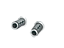 |
| bracers of toughness | bone bracers | 10s | [+0,+0] | {To+4} | wood | HM(+0,1d1) | |
| bracers of boxing | (curled bracers) | 8s | [+0,+0] | +4/+2/+1 unarmed to-hit and dmg B/U/C [1] | leather | HM(+0,1d1) | 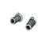 |
| bracers of empowerment | (electrum bracers) | 8s | [+0,+0] | *PPRg | gold | HM(+0,1d1) | 
|
| bracers of lifting | (broad bracers) | 8s | [+0,+0] | 133% carrying capacity [2] | leather | HM(+0,1d1) | 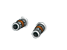 |
| bracers of piety | (jeweled bracers) | 8s | [+0,+0] | +piety over time | gold | HM(+0,1d1) | 
|
| bracers of precision | (leather bracers) | 10s | [+0,+0] | +8/+4/+2 ranged to-hit B/U/C | leather | HM(+0,1d1) | 
|
| bracers of purity | (white bracers) | 10s | [+0,+0] | *Pure | gold | HM(+0,1d1) | |
| bracers of resilience | (linen bracers) | 8s | [+0,+0] | -Sick | cloth | HM(+0,1d1) | 
|
| bracers of strength | (massive bracers) | 20s | [+2,+0] | {St+4} | mithril | HM(+0,1d1) | 
|
[1] No bonus if using shield.
[2] B/U/C does not matter.
[3] Don't auto-identify on equip.
| Name | UnID'd name | Weight | [DV,PV] | Special | Damage | Tile |
|---|---|---|---|---|---|---|
| *bracers of war | shining silver bracers | 10s | [+8,+4] | {Dx+8} +Luck -Conf -Deth -Stun *Crit 8% *Rgen | HM(+16,1d1) | |
| *bracers of pure might | gilded bracers | 12s | [+4,+4] | {St+8} (+8 Sp) +SeeI *Pure | HM(+0,1d1) | 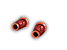 |
| *manacles of madness | manacled bracers | 60s | [-4,+4] | {Le+5} +SeeI +Tele -Acid *Curs *PPRg | H(+2,1d10+2) M(-4,1d6) | 
|
| *quicksilver bracers | silver bracers | 10s | [+7,+3] | (+6 Sp) -Elec -Para -Petr | HM(+0,1d1) | 
|
| Name | UnID'd name | Weight | (MEM,MIM) [DV,PV] | Effect | Made of | Damage | Tile |
|---|---|---|---|---|---|---|---|
| alchemistic gloves | gloves | 6s | [+0,+0] | -Acid -Pois [3] | leather | HM(+0,1d1) | 
|
| archery gloves | gloves | 6s | (+0,+4) [+0,+0] | leather | H(+0,1d1) M(+4,1d1) | 
| |
| boxing gloves | gloves | 6s | (+3,-5) [+2,+1] | leather | H(+3,1d1+1) M(-5,1d1) | 
| |
| brass knuckles | 10s | [+0,+0] | +3 punch damage | iron | HM(+0,1d1) | 
| |
| gloves | 6s | [+0,+0] | leather | HM(+0,1d1) | 
| ||
| gloves of carrying | gloves | 6s | [+0,+0] | adds capacity [2] | leather | HM(+0,1d1) | 
|
| gloves of dexterity | light gloves | 6s | [+0,+0] | {Dx+2} | leather | HM(+0,1d1) | |
| gloves of smiting | gloves | 6s | [+0,+0] | (+1 damage) | leather | HM(+0,1d1) | |
| gauntlets | 10s | (-1,+0) [+0,+1] | iron | H(-1,1d2) M(+0,1d2) | |||
| gauntlets of peace | gauntlets | 10s | (-15,-15) [+3,+3] | *Curs | iron | HM(-15,1d2) | |
| gauntlets of strength | iron-shod gauntlets | 40s | (-1,+0) [-1,+1] | {St+3} | iron | H(-1,1d2) M(+0,1d2) | 
|
| studded gloves | gloves | 6s | [+1,+2] | leather | HM(+0,1d1) | ||
| thick gauntlets | 15s | (-1,-2) [+0,+1] | [1] | leather | H(-1,1d4) M(-2,1d3) | 
| |
| black leather gauntlets | black gauntlets | 10s | [+0,+1] | leather | HM(+0,1d2) | 
| |
| blue leather gauntlets | blue gauntlets | 10s | [+0,+1] | leather | HM(+0,1d2) | 
| |
| red leather gauntlets | red gauntlets | 10s | [+0,+1] | leather | HM(+0,1d2) | ||
| white leather gauntlets | white gauntlets | 10s | [+0,+1] | leather | HM(+0,1d2) | ||
| black dragon-hide gauntlets | black gauntlets | 10s | (-2,+0) [+0,+2] | -Acid | iron | H(-2,1d4) M(+0,1d3) | |
| blue dragon-hide gauntlets | blue gauntlets | 10s | (-2,+0) [+0,+2] | -Elec | iron | H(-2,1d4) M(+0,1d3) | 
|
| red dragon-hide gauntlets | red gauntlets | 10s | (-2,+0) [+0,+2] | -Fire | iron | H(-2,1d4) M(+0,1d3) | |
| white dragon-hide gauntlets | white gauntlets | 10s | (-2,+0) [+0,+2] | -Cold | iron | H(-2,1d4) M(+0,1d3) | |
| fencing gloves | gloves | 6s | [+1,+1] | leather | HM(+0,1d1) | 
| |
| fencing gloves of fidelity | gloves | 6s | [+3,+1] | {Ch+6} | leather | HM(+0,1d1) | 
|
| fencing gloves of speed | gloves | 6s | [+4,+1] | (+4 Sp) | leather | HM(+0,1d1) |
[1] Thick gauntlets are workaround for the effects of the poison hands corruption.
[2] Cursed: carrying capacity is reduced by weight of items wielded * 300%. Uncursed: carrying capacity is increased by weight of items wielded * 50%. Blessed: carrying capacity is increased by weight of items wielded * 90%.
[3] Alchemistic gloves negate the poison hands effect when picking up food and potions, but not when drinking or eating.
| Name | UnID'd name | Weight | (MEM,MIM) [DV,PV] | Special | Damage | Tile |
|---|---|---|---|---|---|---|
| +elemental gauntlets | gauntlets | 10s | (-1,+0) [+0,+3] | -Cold -Elec -Fire ~Orbs | H(-1,1d2) M(+0,1d2) | |
| *iron gauntlets "Ironfist" | iron gauntlets | 10s | (-1,+0) [+1,+3] | {St+7} -Stun | H(-1,1d2) M(+0,1d2) | |
| *gauntlets of eternal peace "Shezestriakis" | gauntlets | 10s | (-15,-15) [+15,+3] | -Acid -Cold -Elec -Fire -Pois *Curs [1] | HM(-15,1d2) | 
|
| *fencing gloves of St. Montojja | gloves | 6s | [+6,+3] | {Dx+12} (+12 Sp) -Conf -Stun | HM(+0,1d1) |
[1] Negate the poison hands effect when picking up food and potions, but not when drinking or eating.
| Name | UnID'd name | Weight | (MEM,MIM) [DV,PV] | Special | Made of | Damage | Tile |
|---|---|---|---|---|---|---|---|
| leather boots | 25s | [+0,+0] | leather | HM(+0,1d2) | |||
| sandals | 6s | [+0,+0] | leather | HM(+0,1d1) | 
| ||
| light boots | 20s | [+0,+0] | leather | HM(+0,1d2) | 
| ||
| heavy boots | 30s | [-1,+1] | leather | H(+0,1d3) M(+0,1d2) | 
| ||
| gnomish boots | 10s | (+1,+0) [+2,+0] | leather | H(+1,1d3) M(+0,1d3) | |||
| spiked boots | 30s | [-1,+1] | +PV+4 kick damage | leather | H(+0,1d3) M(+0,1d2) | 
| |
| iron boots | 120s | [-1,+1] | +PV+1 kick damage | iron | HM(+0,1d4) | 
| |
| mithril boots | metal boots | 96s | [-1,+2] | mithril | HM(+0,1d4) | ||
| adamantium boots | metal boots | 89s | [+0,+3] | adamantium | HM(+0,1d4) | ||
| eternium boots | metal boots | 55s | [+0,+5] | eternium | HM(+0,1d4) | 
| |
| truesilver boots | metal boots | 24s | [+0,+2] | truesilver | HM(+0,1d4) | ||
| boots of sneakiness | leather boots | 20s | [+0,+0] | {Dx+2} | leather | HM(+0,1d2) | |
| boots of speed | soft boots | 20s | [+2,+0] | (+8 Sp) | leather | H(+0,1d3) M(+0,1d2) | 
|
| boots of the slow shuffle | greased boots | 20s | [-6,+0] | (-40 Sp) *Curs | leather | H(+0,1d3) M(+0,1d2) | 
|
| seven league boots | worn boots | 30s | [+1,+0] | [1] | leather | H(+0,1d3) M(+0,1d2) | |
| boots of levitation | leather boots | 20s | [+0,+0] | *Levi | leather | HM(+0,1d2) |
[1] Blessed seven league boots reduce the base energy cost of dungeon movement to 500 750 points, and drastically increase the speed of wilderness movement. See section 0.14.7.
| Name | UnID'd name | Weight | (MEM,MIM) [DV,PV] | Special | Damage | Tile |
|---|---|---|---|---|---|---|
| +boots of great speed | hide boots | 20s | [+5,+0] | (+30 +100 Sp) +Curs +Doom *EoCC | H(+0,1d3) M(+0,1d2) | |
| *boots of the divine messenger | fine leather boots | 25s | [+3,+3] | {Dx+5} +TCtr -Deth -Para | HM(+0,1d2) | 
|
| *boots of the far wanderer | dusty boots | 30s | [+4,+2] | {Wi+7} (+7 Sp) +TCtr +Tele +WBre -Slee | H(+0,1d3) M(+0,1d2) | |
| *moloch boots "Moloch's Thorns" | clunky iron boots | 2500s | (-6,-10) [-10,+24] | {Dx-8} (-8 Sp) +TCtr -Elec -Stun ~Kick | H(-6,1d12+8) M(-10,1d10-4) | 
|